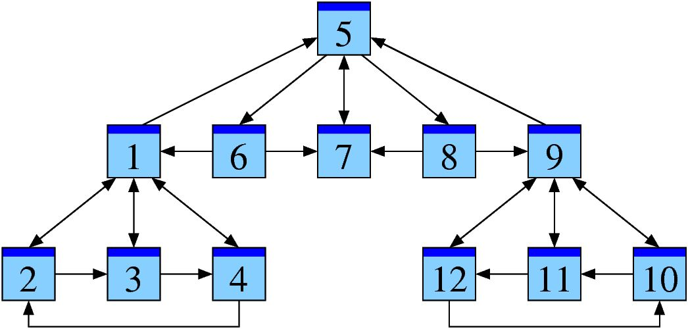

Renvoyer la meilleure réponse possible à une recherche d'internaute
C'est un moteur de RÉPONSES
1 URL <=> 1 Page <=> 1 Contenu
Crawl <-> Indexation
Technique
Contenu
Liens
La page
Le site dans sa globalité
Le reste du monde ;-)
"Following best practices often does nothing for new and emerging sites."
Rand Fishkin
Ensuite : s'assurer que le crawl se passe bien
Comment : TITLE, Balises META
Structure travaillée
Partager les contenus
Flux RSS, Twitter, Facebook, ...(balises META spécifiques)
Pas forcément nécessaire
Tout Drupal !
Attention au Flash, aux images, ...
Contenu dupliqué
Migration depuis un site existant (Module Redirect)
Fil d'ariane, votes, évènements, ...
Images, Vidéos, ...
L'international (hreflang)
Le "local"
Le mobile